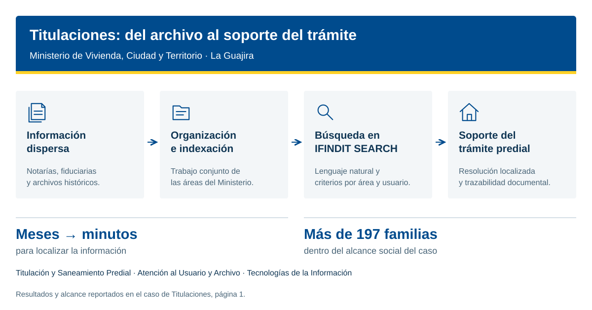

De meses de búsqueda a encontrar una resolución en minutos.
La organización y consulta de información histórica con IFINDIT apoyó el trabajo del Ministerio de Vivienda, Ciudad y Territorio en procesos de titulación y saneamiento predial para familias de La Guajira.

Familias dentro del alcance del caso
Tiempo de búsqueda
Información sin localizar
El documento existía. Encontrarlo era el reto.
La información para atender procesos relacionados con predios del extinto Inurbe estaba dispersa entre millones de documentos de notarías, fiduciarias y archivos físicos e históricos. El caso describe información que no se había encontrado durante más de una década y que era necesaria para avanzar en los trámites.
Tres áreas, una información disponible para consultar.
El Grupo de Titulación y Saneamiento Predial, el Grupo de Atención al Usuario y Archivo y el área de tecnologías de la información trabajaron en la consolidación, organización e indexación de la información. La plataforma permitió realizar búsquedas en lenguaje natural, ajustar criterios por área y usuario y mantener la trazabilidad documental.
Menos búsqueda. Más soporte para el proceso predial.
Tras consolidar e indexar la información, la resolución requerida pudo localizarse en minutos. El caso reporta un diagnóstico predial más rápido, mayor soporte legal y trazabilidad, y un alcance social de más de 197 familias en La Guajira.
La información como apoyo a la seguridad jurídica.
El documento relaciona la disponibilidad de soportes con la posibilidad de avanzar en la formalización predial y facilitar el acceso de las familias a subsidios, créditos, venta o sucesión de su patrimonio.
Resultados y alcance reportados en la infografía del caso de Titulaciones, página 1. Consultar documento original (PDF)
Cómo se utiliza la información

Recorrido descrito en el caso del Ministerio.
Descargar diagrama SVG
Hablemos de su información.
Cuéntenos qué necesita encontrar, analizar u organizar. Conozca IFINDIT con el equipo de Creangel.